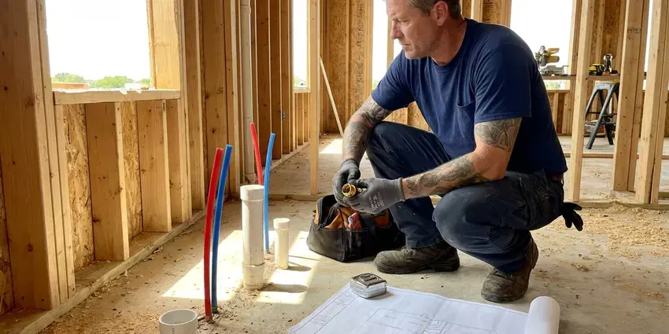

Water Damage Restoration in Steele Creek, AK
When water invades your home in Steele Creek, AK, you need quick, dependable water damage restoration. CKN Plumbing is ready to help.
- Fast Emergency Response
- Damage Mitigation
- Insurance Documentation Support
- Fast Emergency Water Response

Need Urgent Water Damage Restoration in Steele Creek, AK?
We document every step with photos and moisture readings to support your insurance claim.
Complete Water Damage Restoration From the Plumbing Up in Steele Creek, AK
CKN Plumbing restores homes damaged by burst supply lines, slab leaks, water heater failures, washing machine hoses and toilet overflows. Because we are plumbers, the leak is fixed on the spot instead of waiting for a separate contractor.
Our expertise includes:
- Experience in flood cleanup and structural drying.
- Structural drying and dehumidification.
- Fast water extraction and drying.

Additional Plumbing Maintenance Services in Steele Creek, AK
Our maintenance and specialty plumbing services in Steele Creek, AK protect your home year-round and extend the life of every system.


Customers
Why Choose CKN Plumbing for Water Damage Restoration in Steele Creek, AK?
We prioritize a swift response, which is critical in preventing greater damage and potential health hazards. Our skilled technicians work hard to restore your peace of mind and your home.
- Advanced Equipment, We deploy powerful pumps, industrial-grade dehumidifiers, and air movers for rapid drying.
- Certified Technicians, Our team is IICRC certified, meaning they meet strict standards for restoration and cleaning.
- Source Repaired, Our plumbers fix the leak on the first visit so drying can start.
Citywide Coverage
Wherever you are in Steele Creek, we can usually arrive quickly to stop the water and begin drying. We serve homeowners, landlords, HOAs and commercial properties.
Experienced Team
Our water damage restoration team at CKN Plumbing is made up of well-trained and experienced professionals. They are skilled in assessing damage, implementing effective drying strategies, and restoring affected areas, following all local Alaska building codes.
Safety-First Approach
Removed materials are disposed of properly, and rebuild work follows local building and plumbing codes. Permits are pulled for repairs that require them.
Trusted Certified Steele Creek Plumbing Services Professionals
At CKN Plumbing, we take pride in providing licensed, certified plumbing services throughout Steele Creek, AK. Backed by leading industry credentials, our experienced plumbers combine technical skill with genuine customer care. Whether it is repair, installation, or maintenance, we follow strict safety and quality standards to deliver lasting results you can trust.
Call Us Now PHCC Plumbing Contractor Recognition
PHCC Plumbing Contractor Recognition Better Business Bureau (BBB) Accreditation
Better Business Bureau (BBB) Accreditation Angi Certified Pro
Angi Certified Pro ISO 9001 Quality Management Certification
ISO 9001 Quality Management CertificationThorough Water Damage Restoration Services in Steele Creek, AK
Basement and Crawl Space Water Cleanup in Steele Creek
Basements and crawl spaces are particularly vulnerable to water damage, which can lead to foundation issues and leaks. Permafrost in colder parts of Alaska complicates any buried plumbing, and thawing ground can cause settling that cracks pipes. Our team in Steele Creek specializes in cleaning and drying these hard-to-reach areas. We remove contaminated materials, sanitize surfaces, and put solutions in place to prevent future water intrusion, protecting your home's foundation and air quality.

Foundation Water Damage Mitigation in Steele Creek, AK
Water intrusion around or under a home's foundation, whether pier and beam or slab, can lead to serious structural issues. We assess and limit water damage affecting foundations, addressing concerns like soil expansion and contraction. Permafrost in colder parts of Alaska complicates any buried plumbing, and thawing ground can cause settling that cracks pipes. Our restoration plans account for local soil conditions, heading off long-term foundation problems that can be costly to repair. Proper grading and drainage are also discussed to prevent future issues.
Mold Remediation and Prevention in Steele Creek
Water damage often leads to mold growth. Many homes in Alaska rely on hydronic heat, so a boiler or circulation pump failure can quickly become a plumbing emergency as well. Our team is trained in proven mold remediation techniques, safely removing existing mold colonies and treating affected areas in Steele Creek to prevent recurrence. We use EPA-approved antimicrobial agents and provide proper ventilation during the process. Preventing mold is important for indoor air quality and the long-term health of your home and family, as some mold types can cause respiratory issues.
Kitchen and Appliance Leak Restoration in Steele Creek
Dishwashers, refrigerator ice maker lines and sink supply lines can leak slowly under cabinets for weeks. By the time you notice, cabinet bases and subfloor may be swollen. We repair the leak, remove cabinet toe kicks to dry beneath and replace damaged panels. Stainless braided lines and leak sensors help prevent repeat damage.
Structural Drying and Dehumidification in Steele Creek, AK
After extraction, thorough drying of the structure is essential to prevent mold and further damage. We deploy powerful air movers and industrial dehumidifiers, including low-grain refrigerant and desiccant units, to dry out affected areas in your Steele Creek, AK home. Our technicians monitor moisture levels in walls, floors, and ceilings using professional meters to confirm complete dryness. Proper structural drying prevents warping of wood and delamination of flooring and preserves your home's framework.
Insurance Claim Assistance in Steele Creek, AK
Navigating insurance claims for water damage can be complex. CKN Plumbing assists homeowners in Steele Creek, AK by documenting the damage with detailed reports and photos, which helps speed up the claims process. We work with most major insurance providers, providing clear communication and transparent estimates. While we don't file claims for you, our thorough documentation can greatly help in getting your claim approved and securing the coverage you deserve.
Insurance Claim Assistance for Water Damage in Steele Creek
Navigating insurance claims for water damage can be complex. CKN Plumbing in Steele Creek can assist you by providing detailed documentation of the damage and restoration process. We work with many insurance providers, helping to streamline the claims process so you receive proper coverage for the needed repairs and restoration work.

Sewer Backup Cleanup in Steele Creek
Sewer backups present a serious health hazard due to contaminated water. Our team provides specialized cleanup services for sewer backups in Steele Creek, safely removing wastewater and disinfecting affected areas. We use protective gear and follow strict protocols to prevent the spread of bacteria and pathogens. This service includes thorough cleaning, sanitization, and deodorization to restore your property to a safe, livable condition, often including removal of porous materials.
Water Damage Cleanup Near Me in Steele Creek, AK
When water is spreading across your floor, you need a crew that is close by. Our teams are stationed throughout the area with extraction and drying equipment ready to go. That means faster arrival and less damage.
Being local, we understand the foundations, wall types and plumbing systems common in Steele Creek homes. That helps us find hidden moisture and dry it completely. We can also return quickly for daily moisture checks.
CKN Plumbing at a Glance
- Fully licensed plumbing team covering Steele Creek, AK
- 24/7 emergency service with same-day scheduling
- Upfront, flat-rate pricing before work begins
- 4.9-star rated by 309+ Alaska customers
Steele Creek Map
Steele Creek Information
- Population
- 6,437
- Area codes
- Local
- Service area
- Steele Creek and communities within 40 miles
- Nearby
- Badger, Fairbanks, College, Chena Ridge
Aging water heaters, worn supply lines and hidden pipe leaks are frequent in Steele Creek, AK homes, so fast water damage restoration limits repairs and mold risk.
Expert Services
Trust our professionals for reliable CKN Plumbing solutions in Steele Creek, AK.
Our Specialized Plumbing Services in Steele Creek, AK
At CKN Plumbing, we provide a complete range of plumbing services across Steele Creek, AK. From leak detection to full system installations, our team ensures fast, precise, and affordable service for both residential and commercial properties. Explore our core services below:


How Our Water Damage Restoration Service Works in Steele Creek, AK
CKN Plumbing follows a proven multi-step process for water damage restoration in Steele Creek, from first assessment to final restoration.
Request a Quote
Contact CKN Plumbing right away at (928) 470-9007 when you discover water damage. We will gather initial information and dispatch a team to your location quickly.
Damage Assessment
Our certified technicians will arrive to assess the extent of the water damage, identify the source, and formulate a complete restoration plan. This includes using moisture meters to detect hidden saturation.
Water Extraction
We use powerful, industrial-grade equipment to remove all standing water from your property. This crucial step reduces drying time and prevents secondary damage.
Frequently Asked Questions About Water Damage Restoration in Steele Creek
The cost of water damage restoration in Steele Creek varies widely depending on the extent of the damage, the category of water, whether clean, gray, or black water, and the materials affected. Minor clean water incidents might range from $1,500 to $4,000, while extensive black water damage involving structural repairs could be $10,000 or more. We provide a detailed estimate after a full assessment.
Generally, basic water extraction and drying do not require a permit in Steele Creek. However, if the water damage calls for major structural repairs, electrical work, or plumbing system overhauls, permits from the Steele Creek building department may be required. We can explain permit requirements based on the scope of work.
While you can handle minor leaks or spills, professional water damage restoration is the safer choice for anything beyond surface moisture. Professionals have specialized equipment to confirm complete drying and prevent mold, and they can safely handle contaminated water.
We use a range of professional-grade drying equipment, including high-capacity air movers, industrial dehumidifiers such as low-grain refrigerant and desiccant models, and specialized moisture meters. These tools allow us to quickly and thoroughly dry affected structures and materials, so all hidden moisture is addressed. Brands like Dri-Eaz, Abatement Technologies, and Concrobium are commonly used in our work.
For minor water damage, you might be able to stay in your home. However, for extensive damage, especially involving contaminated water or significant structural drying, it may be safer and more comfortable to temporarily relocate. We will let you know based on your situation.
Right after discovering water damage, turn off the water source if possible, and turn off electricity to affected areas. Contact a professional water damage restoration company like CKN Plumbing immediately. Remove valuable items and furniture from wet areas. Do not use a regular vacuum to remove water, as it poses an electrical hazard.
Shut off the main water valve and turn off power to affected areas if it is safe. Move valuables away from the water and take photos. Then call a professional to begin extraction and drying.
Signs of hidden water damage in your Steele Creek home include musty odors, discoloration or staining on walls or ceilings, peeling paint, warped flooring, or an unexplained increase in your water bill. If you notice any of these, it's wise to call for an inspection.
What People Are Saying About Our Plumbing Experts?

Laura S.
I scheduled a water heater replacement, and the team made the process smooth and affordable. The new unit works perfectly, and they cleaned up after completing the job.
Water Heater Replacement · Fishhook, AK
Daniel K.
A pipe burst at 11 pm and they actually answered. The plumber showed up within the hour, shut everything down, and had us back to normal the next morning. Could not ask for more.
Emergency Plumbing · Tanaina, AK
James P.
Our commercial plumbing system had a leak under the sink, and CKN Plumbing handled it professionally. The plumbers arrived quickly and restored everything without disruption to our customers.
Commercial Plumbing · Badger, AKRobert G.
The trenchless sewer replacement saved our front yard. They walked us through the camera inspection footage first so we knew exactly what we were paying for.
Sewer Line Replacement · College, AK
Mark T.
When our office needed drain cleaning, CKN Plumbing provided quick, reliable service. The plumber arrived on time and made sure every drain flowed perfectly before leaving. Very satisfied.
Drain Cleaning · Chena Ridge, AK
Emily R.
I called CKN Plumbing for plumbing repair, and the technician was fast, polite, and thorough. They explained the problem clearly and fixed it the same day. I will definitely hire them again. Highly recommended!
Plumbing Repair · Fairbanks, AK